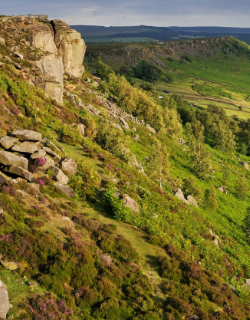
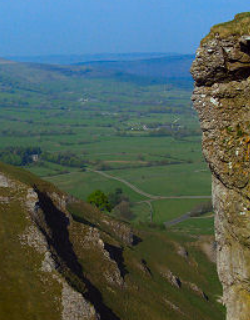

|  |
So a few words about me...
I am 44 years old and I am interested in bushcraft and survival, as well as software development and website design. In my spare time, I try to expand my knowledge about MS Office. In my life I have also completed 3 years of self-learning about investing in Forex - The Currency Markets based on the technical analysis of time charts.
Copyright materials have been used to create the website. Website created for training purposes only.
|
 |